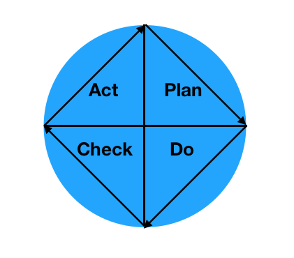

Name: Timothy Barbara
As someone who comes from a QA Engineering background, I have always had a great focus on quality. Quality means a product that is easy to use, fulfills its purpose, and doesn’t fail on the user.
On a fundamental level, products, be it computer software, physical products, or services are about the interaction between people. A good product is something that improves lives. For this reason, quality must be at the forefront. Quality builds a businesses reputation. Customers come to expect a certain level of service from any business and quality is one of the most important measures of that service.
TQM stands for total quality management. It defines an approach to quality in an organization where quality is observed at every level and is the responsibility of everyone.
In a TQM system there is a great focus on incremental improvement. Throughout the process data is collected from all levels and studied to find areas where improvement is possible. Management must carefully consider the collected data and make adjustments to improve quality. TQM strives for zero defects by locating problems early in the process where changes are easy to make. As products reach further into their production it becomes exponentially more expensive to make these sorts of changes.
Quality is a key part of any global organization. In order to compete on the world stage, a company must have something special to offer. There will always be another company that is doing the same thing your company is doing but it somehow doing it better, cheaper, or faster. There is a certain level of prestige that comes with being a company which produces a very high quality product. Toyota is one such company. Toyota has worked tirelessly to refine its manufacturing process through TQM and lean manufacturing methods to produce cars that are very reliable and reasonably priced. This has made their cars highly desirable to the average consumer. In the early 1990s Toyota took aim at luxury brands like BMW and Mercedes-Benz by introducing their Lexus brand. Toyota took what it had learned making mass market cars and applied it to luxury cars. Lexus may have lacked the brand recognition of German luxury brands but they were able to compete by offering a very reliable high quality car at a lower price than the competitors at a time when luxury brands had a poor reputation for reliability and value. Today Lexus is highly regarded by consumers and considered by many to be equal to or better than the German brands.
The Deming cycle is total quality management model which is comprised of four steps repeated in cycles. The idea is that each cycle is part of an overall strategy of iterative improvement with feedback from the previous cycle accounted for in subsequent cycles. The steps to the cycle are plan, do, check, act, and analyze.
In the plan phase a company looks into doing a certain action. The planning phase begins with a goal of improving a certain process within the company. This can involve a production target or defect reduction level.
Once the plan phase is complete, the company moves to the do phase. During this phase the company implements the plan in small steps in controlled circumstances. Care is taken to avoid mistakes at each step as well as collect necessary data on the process.
After doing a company must check the results of the process. Were the goals met? Is the product as intended? Did we stick to the plan? Why or why not?
Based on this analysis the company must act. What worked? What didn’t? What improvements need to be made to hit targets? Steps must be taken to standardize or improve the product or process.
Finally the company must analyze the process and product. Did we reach the goals set out in the plan? We must examine the data collected throughout the process. What worked? What didn’t? We then use this data to make a new plan and the process begins anew.
Starting any quality initiative will involve some growing pains. There are a number of errors that are often made by companies who may be ill prepared to undertake a quality initiative. Some errors include:
Poor senior management delegation or leadership, where management makes the decision to hire and rely on outside experts rather than involve regular employees in a decision. This is a common problem in many companies. There’s an old joke which says “if you want to be taken seriously by your management, quit your job and get rehired as a consultant.” When relying on outside help, people in the company may become blind to goals within the company and not gain a proper understanding of the quality initiative. Employers must be careful to involve everyone in a quality initiative and be willing to guide employees on the path. It’s not enough to just farm it out.
Team mania is where management prematurely places everybody into teams before the members have gotten a chance to learn. This can create more problems than it solves as team members will not have gotten a chance to become familiar with the new process and the corporate culture has not yet adapted to the new team based environment.
Deployment process failures occur when organizations develop quality initiatives without developing an integration plan. A proper quality initiative must be accompanied by a clear deployment plan in order to properly integrate the quality standards into the product development process. Without this plan, the quality initiative will fall flat.
Some managers and organizations make the mistake of taking a narrow dogmatic approaches to quality. There is no “one size fits all” approach and there is no user manual. Attempting to apply a rigid framework without adapt it to the needs of the organization is a recipe for disaster.
Confusing the difference between education, awareness, inspiration, and skill building is another common problem in quality initiatives. Proper training means more than making someone aware of quality standards. It means making sure they understand why those standards are in place to begin with. It is critical that employees develop skills to aid in quality initiative programs.
There is a high cost to poor quality. The most obvious cost is financial costs associated with correcting poor quality errors. When a company has spent a lot of money designing and developing a product only to find quality issues with that product, more time and money must be spent on corrective actions. The gap between the desired and the actual product or service must be filled which takes effort. This includes the cost of labor to fix the problem, the cost of extra materials, the cost of utilities, and the cost of lost opportunities while this problem is being addressed. Additionally business risk reputational harm by introducing poor quality products and services to market.
My company will avoid poor quality costs by introducing total quality initiatives and carefully monitoring the entire product process from inception to delivery. In case poor quality products make it to market we must have an action plan in place to address the issue for the customer and take the lessons learned from the product failure into account for future products. By addressing the customers concerns, the hope is that that company can save itself from reputational harm. Every customer wants to feel like they have been heard and that their business is valued by a company.
World class organizations are those which compete well in the global marketplace. According a survey by the American Management Association there are 15 traits a globally competitive company must have:
Customer service. Business are built by customer satisfaction. Service is an important part of this satisfaction.
Quality control and assurance ensures that products are delivered without defects.
Research and development/new product development ensures that companies don’t fall behind the curve.
Acquiring new technologies is another important part of competition as it can give you an edge.
Innovation allows companies to get a leg up on the competition by discovering new market segments hat may not have existed.
Team-based approaches allow people to collaborate effectively which can lead to higher quality products with more ideas.
Best practices ensure that quality is observed at all levels.
Manpower planning reduces waste and improves quality.
Environmentally sound practices ensure the companies take important steps to reduce waste and minimize environmental impact. Cleaning up and correcting problems from pollution are much harder than avoiding the problems in the first place.
Business partnerships and alliances show that a business can plan ahead and work with competitors to produce something greater. By combining resources companies can remain more competitive against larger companies.
Re-engineering of processes shows that a company can adapt to change which is an important aspect of being globally competitive.
Mergers and acquisitions are a path for a company to grow into new markets and adopt new practices.
Outsourcing and contracting can reduce costs associated with development.
Reliance on consulting services allows companies to consult subject matter experts on various areas.
Political lobbying allows a company to take an active role in their local or national government which gives them a say in laws which might affect their companies bottom line.
Responsibility means doing the right thing within a moral framework. Many people have been raised in a society that values success over all else and as a result have taken to blaming their mistakes on other people. Responsibility means taking ownership of ones mistakes and taking steps to ensure they don’t happen again.
There is a narrative in society that people should be punished for their mistakes rather than learn from them. As a result it has become easier to pass blame on to others in order to avoid punishment or hide mistakes from view. This is counter productive as nobody will learn from the experience and mistakes will be made again. A total quality environment only works if people take ownership of mistakes.
There was a story I read online of an employee at a high end winery who accidentally backed a forklift into a large rack of bottles destroying over $1 million in inventory. The employee owned up to their mistake and fully expected to be fired. The manager told the employee that the company just spent $1 million on training all of the employees to never make that mistake again and it would be a waste to fire them after all of that training. The employee stayed on and for the years he worked there helped to implement practices and safeguards to ensure that such an accident would never happen again. By taking responsibility for the mistake and by the business allowing him to learn rather than be punished the company and the employee both came out better for the experience.
In my company I strive to do the same. We don’t seek to assign blame for a problem but rather acknowledge that issues can arise from anywhere and take steps to correct them for the future.
There are a number of models for ethical quality decisions. The categorical imperative model is a black and white morality model that says there are right and wrong decisions with no grey areas. This model is not incredibly useful as it doesn’t allow any room for nuance.
The full disclosure model says that a company should disclose every issue to their stakeholders and allow them to decide what is ethical. This democratizes decisions but may result in split decisions as different people have different values.
The doctrine of the mean model takes the center point between two extremes arguing that a middle ground is the most ethical choice. This model fails when there is no real middle ground between two points.
The golden rule model is based on the golden rule: “Do unto others as you would have them do unto you.” Under this model stakeholders should make decisions based on what they would want as consumers. This model is also open to the whims of the individual.
The market-ethic model is based on the belief that any legally permissible action that improves profits is ethical. The model comes from the idea that a companies only responsibility is profit and the free market will decide what is unethical. This model ignores the fact that many legal acts are harmful to people or the environment and that the consumer does not necessarily have a choice to act against what they see as an unethical corporation.
In the organizational ethical model, loyalty to the organization is viewed as ethical. The most ethical decisions are those which serve the needs of the business. This is open to interpretation as not everyone will agree what is best for the company.
According to the equal freedom model ethical decisions are those which do not infringe on rights of stakeholders. The meaning of this can vary depending on the stakeholders.
Under the proportionality ethics model, decisions are made in such a way that the good should outweigh the bad. This is based on the assumption that decisions are rarely right or wrong and can have pros and cons.
In the professional ethical model. This model is based on peer review of decisions. A decision is ethical if a cross section of the industry deems it so.
My company uses a combination of the proportionality ethics model and the professional ethics model as we believe that it provides the most complete overview of the decision process. It ensures that ethical behavior is pursued but doesn’t leave the unrealistic impression that decisions are black and white affairs. The professional ethics model also ensures peer review of decisions with minimal conflict of interest as not all reviewers are part of the same company who stand to benefit from potentially unethical decisions.
Managers are responsible for making sure that decisions are made within an acceptable ethical framework with regards to quality. They must strive to maintain a high standard of quality and lead their teams by example. They are responsible for correcting poor quality within their company and reporting and dealing with quality issues as they arise.
There are several approaches to this including the best ratio approach, which states that people are basically good and will make the right decisions but under certain circumstances will be driven to unethical behavior. Managers are responsible to ensuring the conditions are in place to encourage ethical behavior and if this isn’t possible, should take an approach that is best for the greatest ratio of people in the company.
The black and white approach teaches that there is a definite right and wrong and conditions for decision making are irrelevant. Under this model, managers must make the right decision regardless of personal circumstances.
Under the full potential model decisions are made based on how they may affect the ability of the people involved to reach their full potential. Choices that achieve this goal without damaging the potential of others are considered ethical. Under this model, managers must evaluate the potential of all employees and work towards achieving it. They must also be mindful of how these decisions impact others.
Climate change is killing our world and our oceans. Rises in ocean temperature are causing irreparable harm such as extinctions and habitat destruction. Climate change has led to an 89% decrease in new coral at the great barrier reef. The scourge of microplastics, small particles of plastic that break down in the oceans have been discovered all all levels of the food chain including the deepest levels of the ocean. It is estimated that between 93,000 and 236,000 metric tons of microplastics are in the worlds oceans. Plastic degrades over hundreds to thousands of years which means a lot of plastic is being ingested by marine life. As these animals are consumed by other animals and humans, the cycle of microplastic contamination continues up the food chain. Once this plastic enters the ocean it is extremely difficult to clean up.
This is an ecological disaster of the greatest magnitude. Many people around the globe rely on the ocean for their livelihoods, from fishermen to tourism operators. If we do not act to reduce pollution the oceans may soon be unable to support human life.
One needs only to look at these videos of pristine marine ecosystems to understand what is at stake here.
Video 1 Video 2 Video 3 Video 4 Video 5 Video 6Article one was on Aerospace industries saving time and money by implementing Enterprise Resource Planning (ERP) systems. ERPs allow for increased coordination across all levels of the business which results in increased responsiveness to clients. This makes a company more competitive. Colleen brought up the point that ERPs can help eliminate waste and therefore increase quality of products. Zhou then pointed out than an ERP must be carefully planned and implemented or it could lead to increased waste. I agreed with this assessment adding that employees all need to be on the same page when it comes to ERP.
Article two was on 3D printing and how companies are using it for rapid prototyping. Zhuo further expanded on this idea saying that 3D printing may soon be effectively mandatory for a business which wants to stay competitive. Colleen moved beyond rapid prototyping and went to the potential for medical devices by reducing the reliance on human operators to craft these devices. I then expanded on this point by pointing out the potential speed advantages of 3D printed medical devices.
Article three was on nuclear power and how the industry in the US is largely self regulated although they do strive for safety. I pointed out that nuclear energy is comparatively very safe with accidents being rare. It is somewhat ironic that nuclear power, which produces no greenhouse gasses during plant operation, is vulnerable to climate change.
Social Networking Discussion